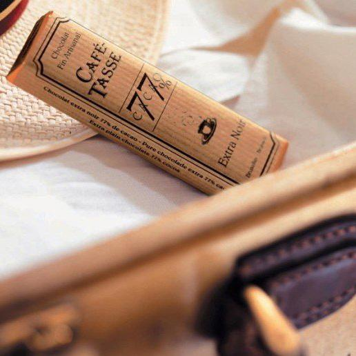

堪稱巧克力中的巔峰之作，均勻採用混合了9種全球頂級的莊園的可可豆混合製成的一款強大且口味平衡的黑巧克力。
它是Amedei系列中唯一的一款75%可可含量黑巧克力，具有精細的口味，帶著一些酸甜交融伴隨著可可的苦，微微收斂的口感。獲得了2009年和2011的超金獎，堪稱獲獎專業戶。
lindt瑞士蓮的黑巧是大眾都輕而易舉消費的起的平價黑巧，85％可可含量，超薄型，相比它們家70%來說偏苦一點，稍微帶一丟丟甜，適合能剛入門的黑巧愛好者。
比利時cafe-tasse咖啡特使 純手工77%可可黑巧克力

比利時著名的巧克力之一，它的原意在法文中是咖啡杯的意思，在世界上也頗有名氣，全手工製作，堪稱巧克力藝術之作。
它是世界第一個為一杯咖啡而量身打造的巧克力，質地更加細膩，口感更加潤滑。吃到嘴裡先有種非常幽淡的苦澀，帶有微酸的滋味，還有種咖啡香。